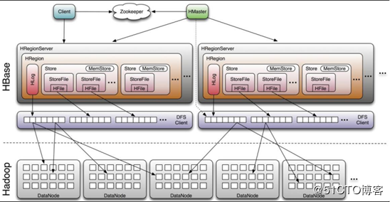
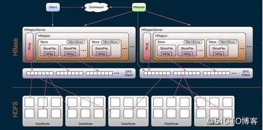
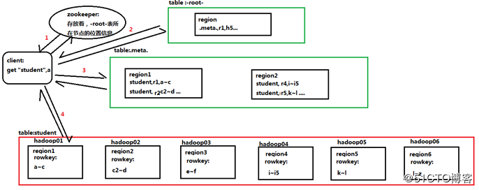
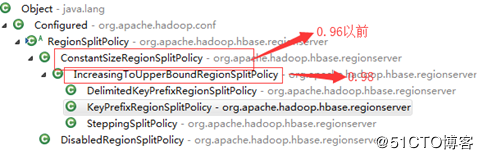
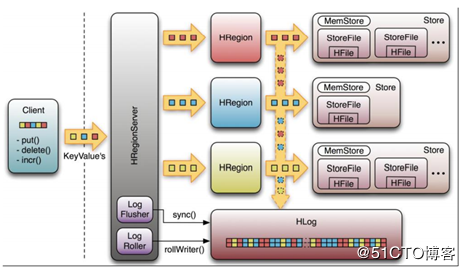
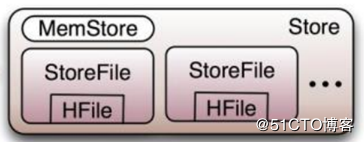
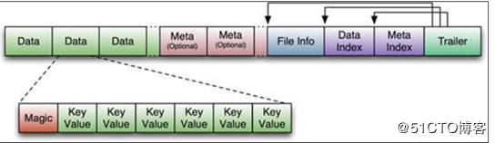
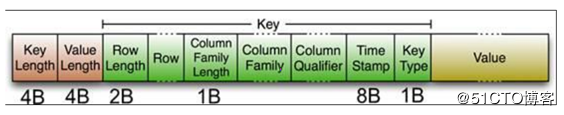
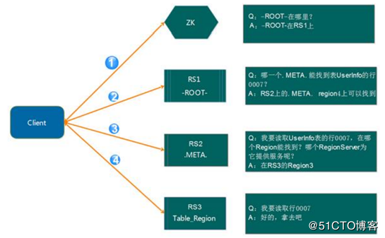
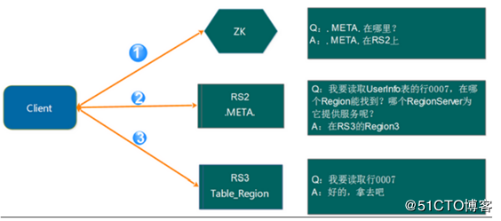

1.hbase的底层逻辑架构
（1）新旧版本的hbase的架构区别

这是旧版本的hbase的架构图，一个regionserver中只有一个Hlog。

这一张是新版本的图，每一个regionserver中可以有30个Hlog。
老版本和新版本的变动：
- 0.96版本以前，一个regionserver只有一个HLog，并且管理元数据有.meta. -root-两个元数据表。
- 0.98版本以后，一个regionserver可以有多个Hlog，并且管理元数据，只有.meta.表。
（2）hbase的中两张特殊的表

- .MEAT.：记录了用户所有表拆分出来的region映射信息（各个region的rowkey范围，以及存在的节点），.MEAT.可以有多个region。对应的用户表中切分出来的每一个region就对应.META.表中的一个记录
- -ROOT-：记录了.META.表的 Region 信息，-ROOT-只有一个 Region，无论如何不会分裂，同样的.META.表切分出来的一个region就是- ROO-表中的一个记录。
（3）hbase架构角色职责
1）client
- Client访问用户表前需要首先访问zookeeper，找到对应的-ROOT-表的region所在位置，然后访问-ROOT-表，找到.meta.表的访问位置，然后找到.meta.表，最后通过.meta.表找到用户数据的位置去访问，中间需要多次网络操作，并且client 端会做 cache 缓存（即如果下一次查找的记录在上一次已经查询了，可以不进行以上操作，直接在缓存中得到）
2）zookeeper
- zookeeper为HBASE提供failover机制，选主master，避免单点故障，其实HBASE中的master，宕机一段时间对集群影响不大，因为master，及时master宕机，HBASE集群仍然可以做：查看，上传操作，但是不能创建和修改表。但是master宕机很长时间是不行的，因为master需要做负载。
- 存储所有Region 的寻址入口：-ROOT-表在哪台服务器上。-ROOT-这张表的位置信息
- 实时监控regionserver的状态，将regionserver的上线和下线信息实时通知给master
- 存储HBASE的schema（包括有哪些 Table，每个 Table 有哪些 Column Family）；默认情况下： /hbase/table：是zookeeper中存储HBASE中表名的目录
3）Master
- 为regionserver分配region（并且做负载均衡）
- 发现失效的 RegionServer 并重新分配其上的 Region（即，如果有相应的RegionServer宕机的时候，master会将其宕机节点上的region，复制到其他节点上），高容错。
- HDFS 上的垃圾文件（HBase）回收
- 处理HBASE的schema（表的创建、删除、修改、列簇的增加…）
4）RegionServer
- RegionServer 维护 Master 分配给它的 Region，处理对这些 Region 的 IO 请求（即对表中数据的增、删、改）
- 负责和底层的文件系统hdfs交互，存储数据到hdfs
- 负责 Store 中的 HFile 的合并工作
- RegionServer 负责 Split 在运行过程中变得过大的 Region，负责 Compact （切分）操作

切分原则：
第一次：128*（1*1）
第二次：128*（3*3）
第三次：128*（5*5） 直到计算的结果>10G的时候，以后就按照10G切分
2.hbase的底层物理存储原理
（1）整体物理结构

上图是一个regionserver的存储
- Table中的所有行按照rowkey进行字典排序，然后根据rowkey范围，切分出不同的region
- Region的默认大小为10G，每个表一开始只有一个 HRegion，随着数据不断插入 表，HRegion 不断增大，当增大到一个阀值的时候，HRegion 就会等分会两个新的 HRegion。 当表中的行不断增多，就会有越来越多的 HRegion
- Region是Hbase 中分布式存储和负载均衡的最小单元。同一个region中的数据一定是存储在同一个节点上的，但是region切分后，可以存储的不同的节点
- Region虽然是负载的最小单元，但是不是物理存储的最小单元。实际上，region由一个或者多个store组成，每一个store，存储的是region中的一个列簇中的所有数据。每个 Strore 又由一个 MemStore 和 0 至多个 StoreFile 组成
（2）MemStore和StoreFile

一个region由多个store组成，每一个store包含一个列簇的所有数据，一个region由多个store组成，每一个store包含一个列簇的所有数据。
原理：在写入数据的时候，现将数据写入到Memstore，当 Memstore 中的数据量达到某个阈值，regionserver启动flushcache 进程写入 Storefile，每次写入形成单独一个 HFile。（即，当达到阈值的时候，首先会将存储在Memstore中的数据写入磁盘，形式为hfile,当磁盘中有多个Hfile的时候，又会进行合并，合并成一个storefile）。
（3）storefile和hfile结构
StoreFile 以 HFile 格式保存在 HDFS 上，请看下图 HFile 的数据组织格式：

其中：首先 HFile 文件是不定长的，长度固定的只有其中的两块：Trailer 和 FileInfo。
- Trailer：有指针，指向其他数据块的起始点
- FileInfo：记录本文件的元数据信息
- Data：存储的是表中的数据
- Meta：保存用户自定义的 kv 对
- Data Index：data的索引，每条索引的 key 是被索引的 block 的第一条记录的 key
- Meta Index：Meta的索引，记录着Meta数据的起始位置
- Data中的magic：用于校验，判断是否有数据损坏
其中，除了trailer和fileinfo两个定长的数据以外，其他的数据都可以进行压缩。
data中的K-V键值的介绍：

两个固定长度的数值，分别表示key的长度和value的长度。紧接着是key，开始是固定长度的数值，表示rowkey的长度，紧接着是rowkey，然后是固定长度的数值，紧接着是列簇名（最好是16），接着是 Qualifier（列名），然后是两个固定长度的数值，表示 TimeStamp 和 KeyType（Put/Delete）。Value 部分没有这么复杂的结构，就是纯粹的二进制数据了。
（4）Hlog---WAL
WAL 意为 Write ahead log，用于做灾难恢复的，HLog 记录数据的所有变更，一旦数据修改，就可以从 Log 中 进行恢复。
灾难恢复的解释：开始的时候region的数据时存储在内存中的metestore，此时还没有达到阈值，数据仍在内存中，没有持久化到磁盘，如果此时机器突然宕机，储存在内存的数据，会丢失，此时需要hlog进行数据的恢复。但是hlog只会保存，在没有同步到磁盘中的那部分操作的日志，已同步到磁盘的数据，那部分的日志，会被存放到oldWAL目录下，10分钟后删除。
HLog 的文件结构：
- HLog Sequence File 的 Key 是 HLogKey 对象，HLogKey 中记录了写入数据的归属信息，除 了 table 和 region 名字外，同时还包括 sequence number 和 timestamp，timestamp 是”写入 时间”，sequence number 的起始值为 0，或者是最近一次存入文件系统中 sequence number。
- HLog Sequece File 的 Value 是 HBase 的 KeyValue 对象，即对应 HFile 中的 KeyValue
3.hbase的寻址机制
介绍 ：读写是在regionserver上发生，每个 RegionSever 为一定数量的 Region 服务，如果client要对某一行数据做读写的时候，我们该访问哪一个regionserver？，可以使用寻址的方式解决。
（1）老版本的region的寻址机制（0.96以前）

解释：
- client请求zookeeper获得-root-所在的regionserver地址
- client请求-root-所在的regionserver,获取取.META.表的地址。client 会将-ROOT-的相关 信息 cache 下来，以便下一次快速访问
- client请求.META.表的regionserver，获取访问数据所在的regionserver的地址（仍然有缓存）
- client请求访问数据所在的regionserver，获取相应的数据
（2）新的region寻址方式（0.98版本）

- Client 请求 ZooKeeper 获取.META.所在的 RegionServer 的地址
- Client 请求.META.所在的 RegionServer 获取访问数据所在的 RegionServer 地址，Client 会将.META.的相关信息 cache 下来，以便下一次快速访问
- Client 请求数据所在的 RegionServer，获取所需要的数据
4.hbase的读写过程
（1）读流程：
- 客户端通过zookeeper以及-root-表和.mate.表找到目标数据所在的regionserver（寻址）
- 联系regionserve查询目标数据
- Region先在memstore中查找，命中则返回
- 如果memstore找不到，则在storefile中扫描 ， 为了能快速的判断要查询的数据在不在这个 StoreFile 中，应用了 BloomFilter（布隆过滤）
（2）写流程：
- Client先根据rowkey找到对应的region所在的regionserver(寻址)
- Client向regionserver提交请求
- Regionserver找到目标region
- Regionserver检查数据是否与 Schema 一致
- 如果客户端没有指定版本，则获取当前系统时间作为数据版本
- 将更新写入Hlog
- 将数据写入memstore
- 判断memstore的是否需要flush为storefile
注意：
- 数据在更新时首先写入 HLog(WAL Log)，再写入内存(MemStore)中，MemStore 中的数据是排序的
- Storefile是只读的，一旦创建就不能在修改，因此HBASE的更新/修改其实是不断追加的操作，根据版本的保留策略，会将旧的数据删除
5.master和Regionserver的工作机制
（1）Regionserver的工作机制
1） region的分配
任何时刻，一个region只能分配一个regionserver。Master记录了当前有哪些可用的regionserver。以及当前哪些region分配给了哪些regionserver，哪些region还没有分配。当需要分配新的region的时候，master就给一个有可用空间的regionserver发送装载region的请求。把这个region分配个这个regionserver。
2）RegionServer 上线
Master 使用 zookeeper 来跟踪 RegionServer 状态。当某个 RegionServer 启动时，会首先在 ZooKeeper 上的 server 目录下建立代表自己的 znode。由于 Master 订阅了ZooKeeper server 目录上的变 更消息，当 server 目录下的文件出现新增或删除操作时，Master 可以得到来自 ZooKeeper 的实时通知。因此一旦 RegionServer 上线，Master 能马上得到消息
3）RegionServer 下线
当 RegionServer 下线时，它和 zookeeper 的会话断开，ZooKeeper 而自动释放代表这台 server 的文件上的独占锁。Master 就可以确定，regionserver和zookeeper之间无法通行了，regionserver可能宕机了。
（2）master的工作机制
1）master的启动步骤：
- 从zookeeper上获取唯一代表Active Master 的锁，用来阻止其它 Master 成为 Master
- 扫描zookeeper上的server的节点，获得当前可用的regionserver节点列表。
- 和每一个regionserver通信，获得当前分配的region和regionserver的对应关系。
- 扫描.META. Region 的集合，计算得到当前还未分配的region，将他们放入待分配region列表。
2）master的下线：
由于master只维护表和region的元数据，而不参与数据IO的过程，master下线仅导致所有的元数据的修改被冻结（无法创建表，无法修改表的schema，无法进行region的负载均衡），表的数据读写还可以正常进行。因此master可以短暂的下线。从上线过程可以看到，Master 保存的信息全是可以冗余信息（都可以从系统其它地方 收集到或者计算出来）


Ctrl+Enter 发布
发布
取消